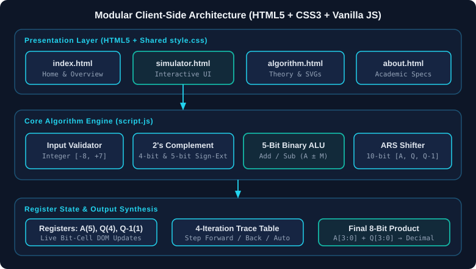
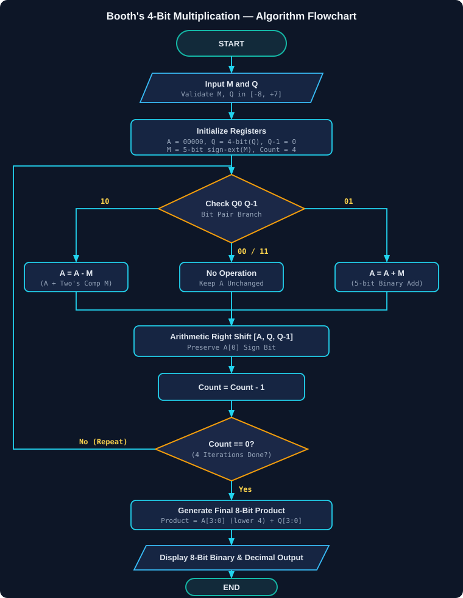

Computer Organization and Architecture — Mini Project Report
Booth's Multiplication Algorithm Simulator (Signed 4-Bit)
Group B • Project Number: 2
Certificate
This is to certify that the mini project entitled "Booth's Multiplication Algorithm Simulator (Signed 4-Bit)" has been submitted by [INSERT STUDENT NAME(S)] (Group B, Project #2) in partial fulfillment of the requirements for Computer Organization and Architecture during the academic year [INSERT ACADEMIC YEAR].
Acknowledgement
We sincerely thank [INSERT FACULTY GUIDE NAME] and the Department of [INSERT DEPARTMENT NAME] at [INSERT COLLEGE / UNIVERSITY NAME] for their guidance and encouragement throughout the development of this project.
Abstract
This project presents an interactive, client-side web simulator for Booth's Multiplication Algorithm restricted to
signed 4-bit integers (-8 to +7). Built with HTML5, CSS3, and Vanilla JavaScript, the simulator
performs genuine binary two's complement arithmetic using a 5-bit internal Accumulator (A), sign-extended 5-bit
Multiplicand (M), 4-bit Multiplier (Q), and 1-bit Q₋₁ across four iterations to produce
an 8-bit signed binary and decimal product. Exhaustive automated testing verified all 256 input pairs (256/256 passed).
1. Introduction & 2. Problem Statement
Booth's Multiplication Algorithm (1950) multiplies signed binary integers in two's complement representation without converting negative operands to positive magnitudes. Students often find it difficult to manually trace register updates and arithmetic right shifts across cycles. This simulator provides an interactive, step-by-step visual workbench to bridge that gap.
3. Objectives
- Accept strictly signed 4-bit integers (
-8to+7) with live binary conversion. - Visualize
A(5-bit internal),Q(4-bit),Q₋₁(1-bit), andMregisters. - Execute authentic binary addition, subtraction, and arithmetic right shifts across 4 iterations.
- Verify correctness across all 256 valid input combinations.
4. Existing System vs. 5. Proposed System
Existing System: Manual pen-and-paper tables or standard calculators that hide intermediate register states.
Proposed System: A browser-based, zero-dependency simulator with forward/backward stepping, auto-play,
educational theory, and SVG diagrams.
6. Hardware & 7. Software Requirements
| Category | Specification |
|---|---|
| Hardware | Any dual-core CPU, 2 GB+ RAM, < 5 MB disk space, 360px+ display |
| Software | Modern browser (Chrome, Firefox, Edge, Safari); Node.js v18+ (optional for automated tests) |
| Tech Stack | HTML5, CSS3, Vanilla JavaScript (ES6+), SVG |
8. System Architecture & 9. Block Diagram


10. Flowchart

11. Algorithm Explanation & 12. Mathematical Example (-5 × 3 = -15)
With M = -5 (1011₂ → 5-bit 11011, -M = 00101) and Q = 3 (0011₂), initialized as
A = 00000, Q = 0011, Q₋₁ = 0:
| Iter | Q₀ Q₋₁ | Operation | A (After Op) | A (After ARS) | Q (After ARS) | Q₋₁ |
|---|---|---|---|---|---|---|
| 1 | 1 0 | A = A - M | 00101 | 00010 | 1001 | 1 |
| 2 | 1 1 | No Operation | 00010 | 00001 | 0100 | 1 |
| 3 | 0 1 | A = A + M | 11100 | 11110 | 0010 | 0 |
| 4 | 0 0 | No Operation | 11110 | 11111 | 0001 | 0 |
Final 8-bit Product: Lower 4 bits of A (1111) + Q (0001) = 11110001₂ = -15₁₀.
13. Implementation Details & 14. Source Code Overview
index.html— Home page, project introduction, example, navigation.simulator.html— Interactive simulator UI, register bit-cells, controls, 4-iteration table.algorithm.html— Educational guide, decision table, solved example, SVG diagrams.about.html— Academic specifications, requirements, limitations.style.css— Shared dark-navy and cyan/teal responsive stylesheet.script.js— Pure binary Booth's algorithm engine and DOM controller.
15. Screenshots (Placeholders)
16. Testing and Results
Automated verification executed in Node.js v18.20.4 against script.js confirmed 256/256
valid signed 4-bit input combinations passed (0 failures), along with all 7 benchmark cases:
| M | Q | Expected Decimal | Expected 8-Bit Binary | Result |
|---|---|---|---|---|
| -5 | 3 | -15 | 11110001 | PASS |
| 3 | 2 | 6 | 00000110 | PASS |
| -8 | -8 | 64 | 01000000 | PASS |
| -8 | 7 | -56 | 11001000 | PASS |
| 7 | 7 | 49 | 00110001 | PASS |
| -4 | -3 | 12 | 00001100 | PASS |
| 0 | 7 | 0 | 00000000 | PASS |
17. Advantages, 18. Limitations & 19. Future Scope
- Advantages: Zero-dependency client-side execution, accurate 5-bit internal accumulator handling for
M = -8, responsive UI. - Limitations: Strictly scoped to signed 4-bit operands (
-8to+7); no backend history storage. - Future Scope: Optional 8-bit/16-bit modes, Radix-4 Modified Booth comparison, and interactive quiz mode.
20. Conclusion
The Booth's 4-Bit Multiplication Algorithm Simulator provides a verified, intuitive, and submission-ready educational platform for demonstrating signed binary multiplication in Computer Organization and Architecture.
21. References
- A. D. Booth, "A Signed Binary Multiplication Technique," Quarterly Journal of Mechanics and Applied Mathematics, 1951.
- W. Stallings, Computer Organization and Architecture, Pearson.
- M. Morris Mano, Computer System Architecture, Pearson.